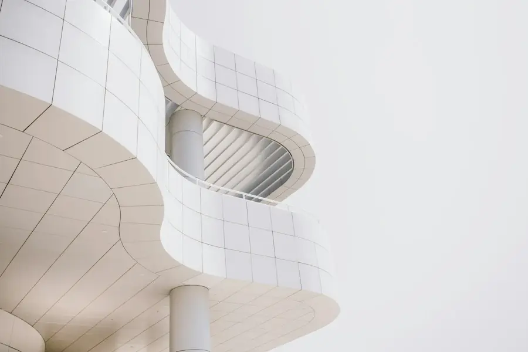

設計の流れと設計料
はじめてのご相談からお引き渡しまで、新築の住宅でおよそ1年〜1年半。設計料は工事費をもとにした目安でお伝えし、契約前に金額を確定します。

設計の流れ
右の帯は、全体のうちどのあたりの時期かを示しています。
ご相談・敷地の確認
初回60分は無料です。ご希望や予算、敷地や建物の状態を伺い、必要なら現地を一緒に見に行きます。
期間の目安 2〜4週ご提案（プラン・模型・概算）
間取りの案を2つほど、模型と工事費の概算といっしょにお見せします。ここまでの費用は、提案料として5万円（設計契約に進む場合は設計料に充当）。
期間の目安 約1か月設計契約・基本設計
契約後、間取り・外観・おもな素材を決めていきます。打ち合わせは2週間に1回ほど。
期間の目安 2〜3か月実施設計・見積もり
工事に必要な詳しい図面を描き、2〜3社の工務店から見積もりをとって内容を比べます。
期間の目安 2〜3か月確認申請・工事契約
役所や検査機関に図面を出し、許可がおりたら工務店と工事契約を結びます。
期間の目安 1か月前後工事・監理
週に1回現場に行き、図面どおりか確認します。気になることはその場で相談できます。
期間の目安 4〜6か月（住宅）お引き渡し・その後
完成検査のあとお引き渡し。1年後に点検にうかがいます。
期間の目安 —
設計料の考え方
設計料には、図面を描くことだけでなく、見積もりの比較や工事中の監理も含まれます。
| 内容 | 料率の目安 | 最低設計料 |
|---|---|---|
| 新築住宅木造2階建てまで | 工事費の 10〜12% | 200万円 |
| 店舗の新築店舗併用住宅を含む | 工事費の 9〜12% | 180万円 |
| リノベーション（住宅）既存の調査・図面化を含む | 工事費の 12〜15% | 80万円 |
| 店舗の内装改修テナント工事 | 工事費の 8〜12% | 40万円 |
| ご相談・現地調査2回目以降、または遠方の場合 | 1回あたり | 1万円 |
例：工事費 2,500万円（税別）の木造平屋の場合
料率11%として、設計・監理料は 275万円（税別）。支払いは4回に分けます。
設計料に含まれるもの
- 基本設計・実施設計の図面
- 模型（スタディ用・提案用）
- 工務店の見積もり比較と調整
- 工事中の監理（週1回程度）
別にかかるもの
- 確認申請などの役所の手数料
- 構造計算（必要な場合）
- 敷地の測量・地盤調査
- 遠方の場合の交通費
よくある質問
ハウスメーカーや工務店と、何が違いますか？
設計事務所は、工事をする会社とは別の立場で図面を描き、工事を確認します。複数の工務店の見積もりを比べられるので、内容と金額のバランスを判断しやすくなります。
予算が少なくても相談できますか？
はい。リノベーションや店舗の内装なら、工事費500万円前後からのご相談もあります。最初に予算を伺い、できることとできないことを正直にお伝えします。
土地探しから相談できますか？
できます。候補の土地に、希望の家が建つかを一緒に確認します（簡単なボリューム検討は無料）。
設計をお願いしたら、必ず建てないといけませんか？
提案の段階までは、契約の義務はありません。提案を見てから、設計契約に進むかどうかを決めてください。
遠方でも頼めますか？
打ち合わせはオンラインでもできます。工事中の監理があるため、事務所から車で1時間半ほどの範囲を目安にしています。
まずは60分の無料相談から
図面や写真がなくても大丈夫です。「こんなことができるか」という段階で、気軽にお声がけください。